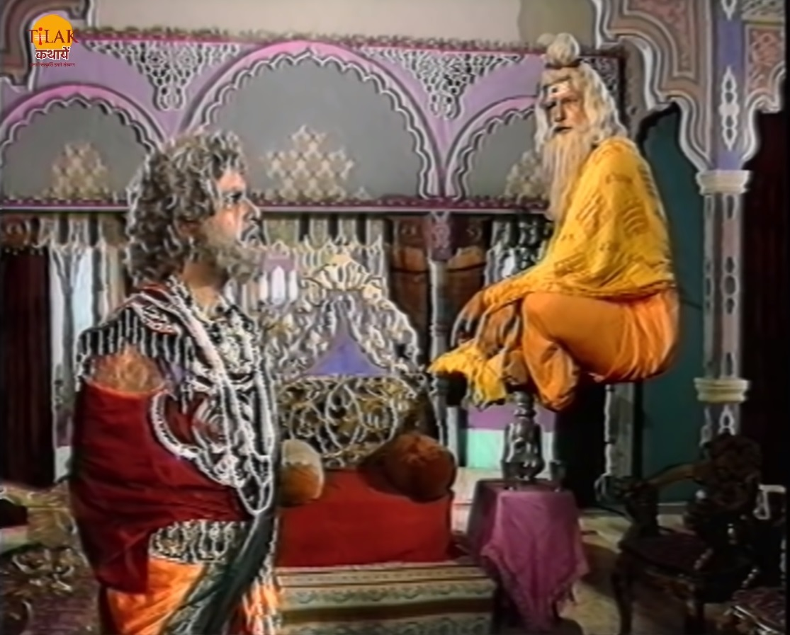
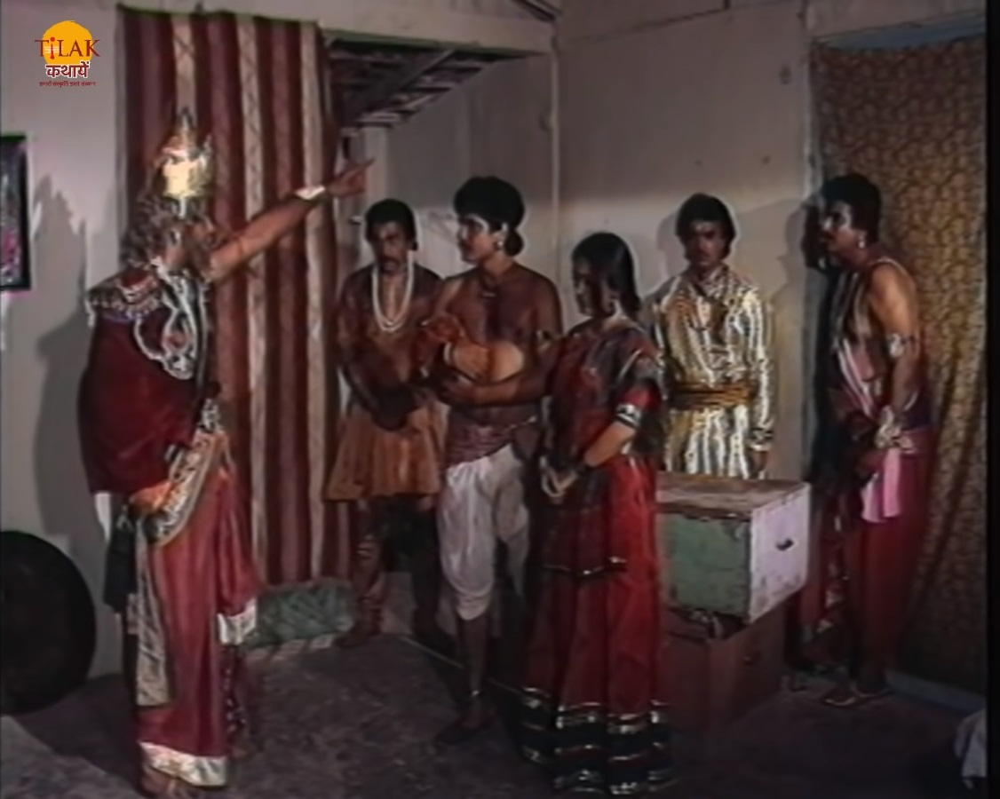

विक्रम और बेताल भाग 22 - चार राजकुमार और एक राजकुमारी की प्रेम कथा
बेताल को राजा विक्रम फिर से पकड़ लेता है और अपने कंधे पर डाल कर अपने साथ ले चलता है ताकि बेताल को साधु के हवाले कर सके। बेताल विक्रम को फिर से रास्ता काटने के लिए एक कहानी सुनता है। इस बार बेताल विक्रम को चार राजकुमारों की कहानी सुनता है जिसमें वो चारों राजकुमार एक ही राजकुमारी से प्रेम करते थे। उन चारों में एक राजकुमार लंगड़ा था जिसका नाम अमर था। अमर भी राजकुमारी से विवाह करना चाहता था लेकिन अपने अपाहिज होने की वजह से पीछे रहता था। एक बार चारों राजकुमार उस राजकुमारी के पिता के पास जाते हैं और अपने प्रेम के बारे में बता देते हैं तो राजा उन्हें कहता है की जो भी राजकुमारी के लिए अनमोल वस्तु खोज कर लाएगा उसका विवाह राजकुमारी के साथ होगा।
चारों अलग अलग दिशा में चले जाते हैं। एक राजकुमार को एक गुफा में साधु मिलते हैं राजकुमार उस साधु की तप को पूर्ण करने में मदद करने को तैयार हो जाता है राजकुमार साधु के तप को पूर्ण करने में मदद करता है आटो साधु उसे एक जादुई आईना देते हैं जिस से राजकुमार राजकुमारी को कभी भी देख सकता था। दूसरा राजकुमार एक अंधी साध्वी से मिलता है तो वो उनकी आँखों की रोशनी वापस लाने के लिए उनके गुरु का यंत्र अपनी जान पर खेल कर ले आता है। अंधी साध्वी की आँखें ठीक हो जाती है और वो उस राजकुमार को एक जादुई वीना देती हैं जिस से वो कभी भी राजकुमारी की आवाज़ को कहीं से भी सुन सकता था।
तीसरे राजकुमार को एक आदमी मिलता है जिसके पास जादुई क़ालीन था जो हवा में उड़ सकता था वह उस आदमी को हीरे की अंगूठी देकर क़ालीन माँगता है तो वह आदमी राजकुमार की अंगूठी लेकर क़ालीन को ले उड़ने लगता है। तो राजकुमार उस के क़ालीन पर लटक जाता है दोनों में हाथापाई हो जाती है तभी एक साँप पेड़ से उनके क़ालीन पर आ जाता है और राजकुमार क़ालीन पर लटके रह जाता है और वह क़ालीन के मालिक को साँप काटने ही वाला था कि राजकुमार क़ालीन पर चढ़ कर उस साँप से उसकी जान बचा लेता है। क़ालीन का मालिक राजकुमार से माफ़ी माँगता है और उसे क़ालीन दे देता है। अमर भी अपनी तलाश में जारी था की राजकुमारी के लिए कोई अनमोल वस्तु ढूँढ सके। अमर को रस्ते में एक वृद्ध वैद्य मिलता है जो कष्ट रोगियों के लिए एक चिकित्सालय खोलना चाहता था लेकिन उसकी उमर हो चुकी थी अपनी उमर को घटाने के लिए एक दवा तैयार करनी थी जिसके लिए उसे एक कुंवारे लड़के की ज़रूरत थी। अमर वैद्य की मदद करने के लिए तैयार हो जाता है। वैद्य अपनी क्रिया शुरू कर देता है और राजकुमार को एक माला देता है जिसकी मदद से वो वैद्य के दुश्मन जादूगर भूतनाथ से लड़ने में आसानी हो सके। राजकुमार अमर माला को लेकर जाप करता है और वैद्य अपनी क्रिया शुरू कर देता है। बीच में जादूगर भूतनाथ आ जाता है वो वैद्य की क्रिया को रोकने की कोशिश करता है लेकिन अमर के कारण वो असफल हो जाता है और जैसे ही भूतनाथ अमर से माला छिन कर तोड़ देता है तो भूतनाथ भी जल जाता है।


वैद्य की क्रिया पूरी हो जाती है और वो दवा पीकर फिर से जवान हो जाता है। वैद्य राजकुमार को एक फूल देता है जिस से वो कोई भी बीमारी को ठीक कर सकता था। चारों राजकुमार एक साथ मिल जाते हैं और पहला राजकुमार उन्हें जादुई शीशा दिखा कर कहता है की वो कभी भी राजकुमारी को देख सकता है और वो जैसे ही शीशे मीन राजकुमारी को देखता है तो उसे पता चलता है की राजकुमारी बिस्तर पर लेती हैं और वैद्य राजा से कुछ कह रहा है, दूसरा युवक अपनी वीना से उनकी बात सुनता है तो उसे पता चलता है की राजकुमारी की तबियत ख़राब है और उसे कुछ भी हो सकता है। तीसरा राजकुमार अपने क़ालीन पर बैठा कर अपने साथ उन्हें जल्दी राज एक पास ले जाता है।